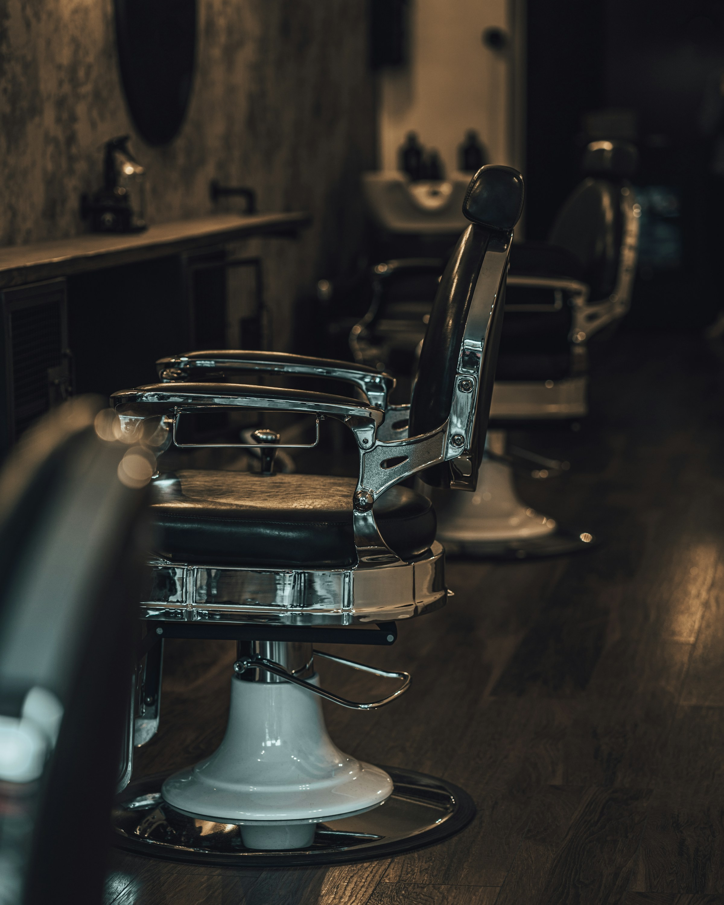
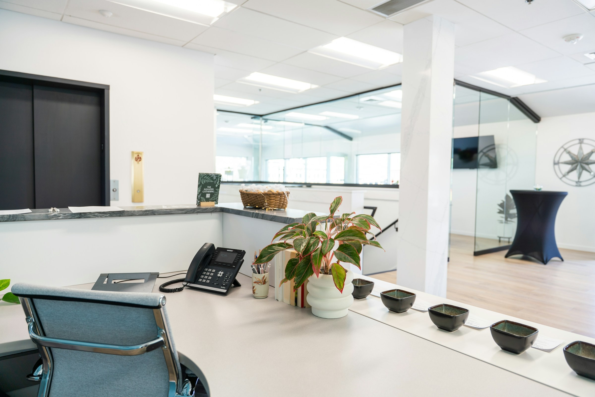
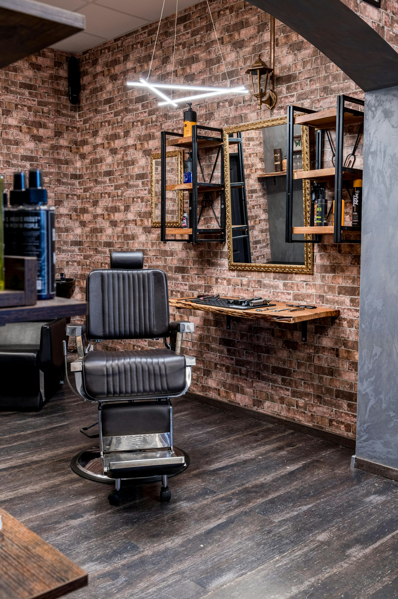

O cliente abre o link, vê os horários livres, escolhe o serviço e confirma. Ninguém da equipe precisa parar para responder.


A Bifrost cria a página de agendamento dentro do seu site, com lembrete automático para o cliente.